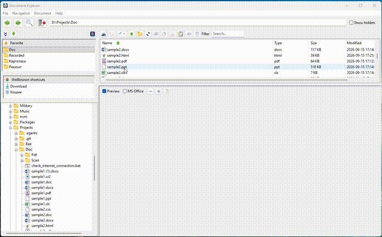
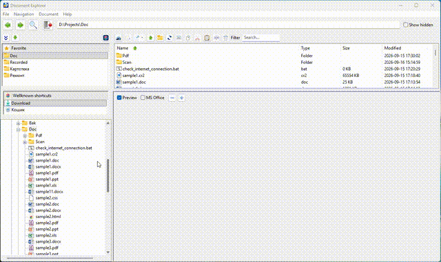
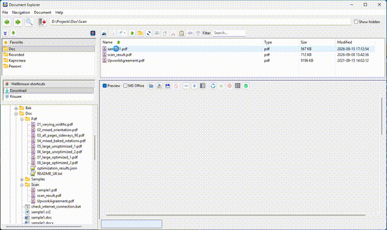
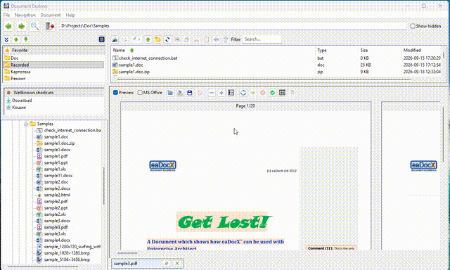
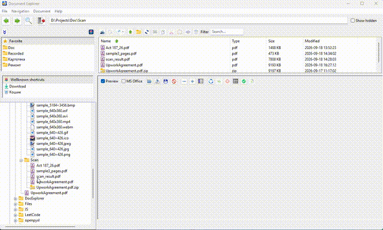
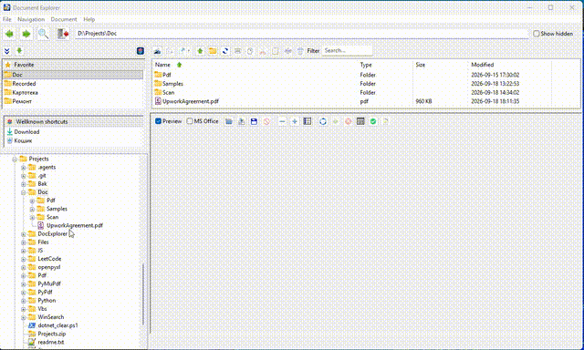

DocExplorer — User Manual
The illustrations and animations reproduce the English interface. Their explanatory text is translated. Appearance may vary with the Windows theme, display scaling and application version.
File
Scan
Open the scanner window, choose a device and acquire pages.

Open
Open the selected folder or file with the associated action.

Open with
Open the selected file with another installed application or choose a different application.

Rename
Rename the selected file or folder.

New folder
Create a folder in the current location.

Refresh
Reload the folder tree and file list. F5.

Open the print dialog for the selected file. Ctrl+P.

Copy / Paste
Copy selected files or folders to the clipboard, then paste them. Ctrl+C / Ctrl+V.

Cut / Paste
Cut selected files or folders, then paste to move them. Ctrl+X / Ctrl+V.

Remove to Recycle Bin
Move selected items to the Windows Recycle Bin. Ctrl+D.

Delete permanently
Delete selected items permanently, bypassing Recycle Bin. Shift+Delete.

Add to archive
Create an archive from selected files or folders.

Extract from archive here
Extract the archive into the current folder.

Extract from archive into
Create or select a destination folder and extract the archive into it.

Options
Choose language, preview, interface and other settings.

Exit
Save application state and close DocExplorer.

Navigation
Back / Forward
Go to the previous or next location in navigation history.

Folder up
Open the parent folder of the current location.

Add to favorite
Add a folder to Favorites or remove it from that list.

Search in files
Search by filename, contents and filters.

Document
Import from file
Add pages from another supported file to the current PDF.

Import from scanner
Scan pages and add them to the current PDF.

Export pages
Export selected PDF pages to a new file.

Save
Save pending PDF changes to the current file.

Cancel
Discard pending PDF changes and reload the saved document.

Zoom In
Increase preview zoom.

Zoom Out
Decrease preview zoom.

1 page wide / 2 pages wide / 1 page tall
Fit one or two pages across, or one full page vertically.

Rotate
Rotate the selected PDF page or image.

Rotate All Right
Rotate all PDF pages by 90 degrees.

Move page
Move a PDF page to a new position.

Remove page
Remove the selected page from the PDF.

Adjust page width
Make page widths consistent in the current PDF.

Optimize
Reduce the current PDF's size while keeping usable quality.

Contents
1. About DocExplorer
DocExplorer is a Windows desktop file explorer for finding, previewing and working with documents. It combines a folder tree, Favorites, Windows shortcuts, a detailed file list and a preview pane. You can edit PDFs without leaving the application.
Browse names, types, sizes and modification dates; preview PDF, images, text, HTML and supported Office files; search names and contents using masks, regular expressions, dates and sizes. PDF edits can be staged, saved or cancelled. Copy, cut, paste, rename, delete, archive, extract, scan and print are also available. The interface supports eleven languages.
Office preview and printing require compatible Microsoft Office components. Scanning uses Windows Image Acquisition (WIA). Archive extraction depends on the tools installed on the PC.
2. Getting started
Start DocExplorer normally. It restores the window size, splitter positions, language, last folder, Favorites and many dialog settings.
Choose a folder in the tree or enter its path in the address bar and press Enter. Select a file in the middle pane to preview it on the right, if preview is enabled and the format is supported. Double-click a folder to enter it or a file to open it in its associated Windows application. Drag splitters to resize panes. Open File > Options to choose language and preview/PDF settings.
PDF page edits are staged in memory: Save writes them to disk; Cancel discards them.
3. Main window
Back and Forward navigate through location history. Search opens Search in files. Exit closes the application after handling unsaved PDF changes. The address bar accepts folder or file paths. Hidden controls whether hidden items are shown.
The file-list toolbar provides Scan, Open, Up, New folder, Print, Copy, Cut, Paste, Rename and Remove to Recycle Bin. Filter narrows the current list; it is separate from content search. Click a column header to sort; double-click an item to open it.
4. Navigating files and folders
The left tree shows the folder hierarchy. Expand a node with its arrow, select a folder to load it and use Up to open its parent. You can also use the address bar and history buttons.
Open opens the selection. Open with selects another installed application. Refresh (F5) reloads the current folder and relevant tree nodes. New folder creates a uniquely named folder at the current location. Rename changes an item's name. Drag and drop moves or copies supported items between navigation and file panes. Show hidden displays hidden items with dimmed icons.
File and context menus enable only actions applicable to the current selection.
5. Favorites and Windows shortcuts
Favorites stores frequently used folders. Add or remove a folder through Navigation or the context menu. Arrow buttons or dragging rows change their order.
The shortcuts section can display Desktop, Documents, Downloads, Pictures, Music, Videos and Recycle Bin. Its toggle shows or hides the section. Right-click the shortcuts list to choose visible entries.
Selecting Recycle Bin shows deleted items in the file list. Its context menu provides Restore, Delete permanently and Clear all.
6. Previewing documents
Select a file to preview it on the right. Preview enables general previews; MS Office separately enables Office conversion previews. Supported types include PDF thumbnails and layouts, raster images with zoom/rotation, text and source files, HTML in the embedded web viewer, and supported Office documents. Long text previews may be truncated for responsiveness.
In this version Word and Excel are converted to HTML, while PowerPoint is converted to PDF; Microsoft Office is required. Pin a preview tab to preserve it while browsing; unpin or close tabs when no longer needed. Large documents initially load the configured number of pages; Load all renders the rest.
Depending on the Office version, a document window may briefly appear or become active during conversion.
7. Editing PDF files
Select a PDF and the page to edit. Rotate the selected page left/right or rotate all pages. Move page asks for a destination position; Remove page removes the selected page from the staged document. Import from file adds pages from another PDF; Import from scanner adds scanned pages. Export pages writes chosen pages to a separate PDF.
Adjust page width makes scanned page widths consistent. Optimize recompresses embedded images using Options. Save commits staged edits, Save as creates another PDF, and Cancel restores the on-disk version.
Optimization may reduce image quality. Choose DPI and color/monochrome compression carefully in File > Options and keep original copies of important documents.
8. Searching in files
Search folder sets the root; Include child folders searches recursively. File mask accepts patterns separated by spaces, commas or semicolons, such as *.pdf *.txt. Word and Excel toggle *.doc* and *.xls* patterns.
Name and content criteria can be enabled independently. If both are active, both must match. Text uses normal matching; Regular expression uses Python-compatible expressions. Case sensitive and Whole word restrict matches. Date and size From/To fields are optional limits.
Search starts the operation; Stop requests cancellation. Double-click a result to select it in the main window and preview it. The dialog remembers history, size, position and column widths.
Content extraction supports text/source files, PDF text and modern Office documents. A scanned PDF without an OCR text layer cannot be found by its visible words.
9. File operations and archives
Select one or more items before Copy, Cut, Remove to Recycle Bin, Delete permanently or Add to archive. Paste targets the current folder. Standard shortcuts are Ctrl+C, Ctrl+X and Ctrl+V.
Add to archive packages selected files/folders. Extract from archive here extracts to the current folder. Extract from archive into creates or selects a destination. Supported formats depend on installed helpers and configuration.
Permanent deletion bypasses Recycle Bin and cannot be undone in DocExplorer. Check the selection and path before confirming.
10. Recycle Bin
Open Recycle Bin from Windows shortcuts. The file list shows deleted items and their original metadata when Windows provides it. Right-click and select Restore to return an item to its original folder. Delete permanently removes selected entries; Clear all empties the entire bin.
Restoration may fail if the original folder is missing or access is denied. Recreate the folder or use appropriate permissions, then retry.
11. Scanning
Choose File > Scan or the scanner button. The Windows WIA dialog controls scanner-specific source, color and resolution settings.
Choose PDF for a multipage document or JPEG for an image. Enable Multiple pages to acquire more pages into one PDF. Set the output filename and whether to open the result. If it exists, overwrite it, create a numbered copy or cancel.
A WIA-compatible scanner and installed Windows driver are required.
12. Printing
Select a file and press Ctrl+P or choose File > Print. Choose printer, copy count and All pages or Selected pages. Page ranges accept expressions such as 1,3-5. Printer Parameters opens Windows printer properties.
Selected-page printing is available for supported PDF and Microsoft Office documents. Printable margins and scaling depend on the printer driver and document application.
13. Options and language
Options includes interface language, preview limits and behavior, PDF optimization quality/DPI, advanced monochrome and color encoding, and scan defaults. Apply saves values. Some labels update immediately; restart if a Windows-integrated component retains the old language.
Languages: English, Ukrainian, German, French, Spanish, Italian, Brazilian Portuguese, Japanese, Korean, Simplified Chinese and Russian. Help opens in the selected interface language.
14. Keyboard shortcuts
F1: open Help. F5: refresh. Ctrl+P: print the selected/current document. Ctrl+C / Ctrl+X / Ctrl+V: copy / cut / paste. Ctrl+D: move selected items to Recycle Bin. Shift+Delete: permanently delete selected items. Enter or double-click: open or activate the selection. Ctrl+Z: undo a supported staged PDF operation.
15. Troubleshooting and safety
Blank preview: enable Preview. For Word/Excel/PowerPoint, enable MS Office preview and check that Office is installed. Wait for large-file conversion, then reselect the file. Open it externally to check for damage or locking.
No content-search results: check folder, mask and Include child folders. Both enabled name/content criteria must match. Remove date/size limits and retry. Scanned images need OCR text for word searches.
Different icons or Recycle Bin behavior in the EXE: build with DocExplorer.spec to include images, localization and documentation. Windows shell metadata varies with account, language and permissions. Refresh after external file operations.
Keep backups before optimization, permanent deletion or extensive PDF editing. Use Save as to preserve originals. Close files in other applications if access/sharing errors occur. Do not interrupt PDF writes or archive extraction.